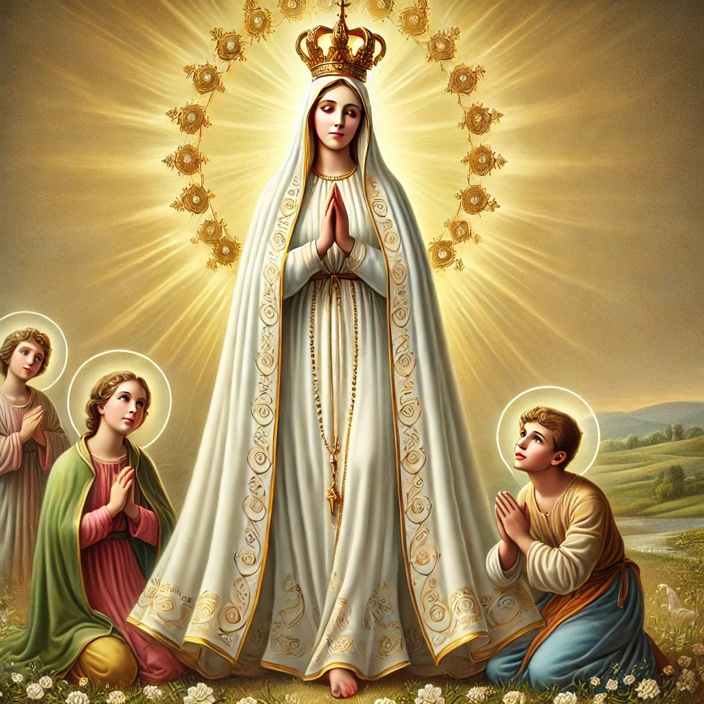

Aparições de Nossa Senhora

Nossa Senhora de Fátima
Em 1917, Nossa Senhora apareceu a três pastorinhos em Fátima, Portugal. Ela entregou mensagens importantes sobre paz, conversão e oração, incluindo o famoso Segredo de Fátima.

Nossa Senhora de Lourdes
Em 1858, Nossa Senhora apareceu a Bernadette Soubirous em Lourdes, França. Ela revelou uma fonte de água milagrosa e pediu que a humanidade se convertesse e rezasse pelos pecadores.

Nossa Senhora de Guadalupe
Em 1531, Nossa Senhora apareceu a Juan Diego no México. Ela deixou sua imagem gravada em seu manto, que se tornou um símbolo de fé e unidade para o povo mexicano e para o mundo.

Nossa Senhora de Medjugorje
Desde 1981, Nossa Senhora tem aparecido a seis videntes em Medjugorje, na Bósnia e Herzegovina. Ela traz mensagens de paz, oração, jejum e reconciliação com Deus.